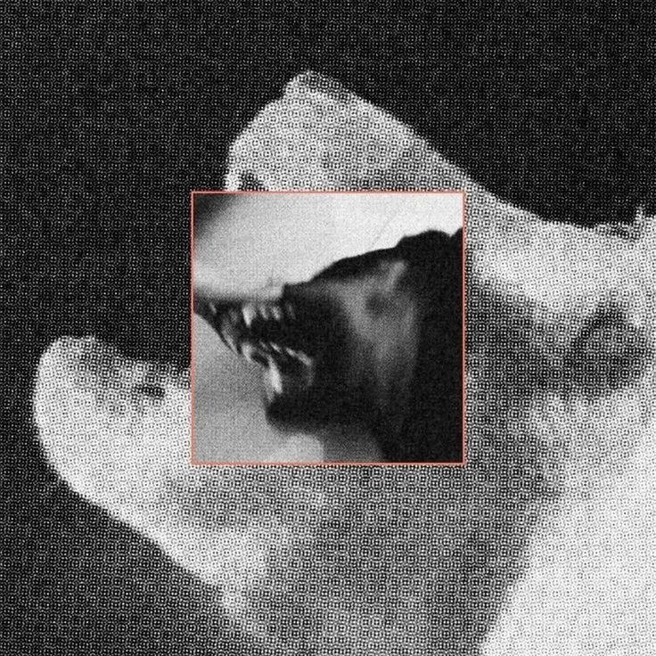

lille hund
hundealbum

[tilblivelsen]
Albummet blev til i et gammelt sommerhus på Møn, hvor jeg tog et par dage hen sammen med min kusine. Tanken var egentlig bare at skrive lidt musik og se, hvad der skete, men huset og omgivelserne begyndte hurtigt at sætte sit præg på sangene. Man kunne høre vinden gennem vinduerne, gulvene knirkede, og køkkenet blev nærmest centrum for det hele. Temaet for albummet endte derfor med at handle om små øjeblikke, tilfældigheder og den lidt skæve stemning, der opstår, når man bare lader tingene ske.
[processen]
Hele albummet er optaget med én SM-58 mikrofon og en laptop. Vi besluttede tidligt, at vi ikke måtte bruge andet optageudstyr, så alle lyde skulle fanges gennem den samme mikrofon. Det betød, at køkkenredskaber blev til instrumenter: gryder som trommer, pasta som shaker og køkkenapparater som rytmer. Mikrofonen blev nogle gange tapet fast til en lampe eller sat midt på bordet, mens vi optog det hele live. Det var en ret enkel – og til tider lidt kaotisk – proces, men det gav albummet den rå og hjemmelavede lyd, som vi gerne ville have.